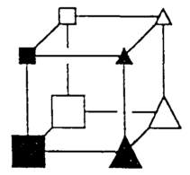

Data and Analysis Unit: PLY49
Last update: 2015-05-19 by Andy Wills
Description
ALCOVE simulation of the Nosofsky et al. (1994, Memory and Cognition) replication of
Shepard, Hovland and Jenkins (1961). Note that this simulation differs from that
reported in Nosofsky et al. (1994) - that simulation was a non-standard version of
ALCOVE, not used before or since. Specifically, it uses a background-noise ratio rule
rather than an exponential ratio rule.
This DAU contains the R and other files needed to run this simulation.
Citation
The APA-format citation for this resource is:
Wills, A.J. (2015). Data and Analysis Unit: PLY49. Retrieved from http://www.willslab.co.uk/ply49
If you make use of these resources, please drop me an email: andy@willslab.co.uk.
Resources
R pacakge 'catlearn' is required.
[download]
- n94alcove.R (1 KB) - Calculate model predictions for the
best-fitting parameters (found by optimization, see below). Best run as source('n94alcove.R').
- n94alcove_optimize.R (5 KB) - Record of parameter
search conducted to find best-fitting parameters.
- n94func.R (2 KB) - Functions required by n94alcove.R and n94alcove_optimize.R
- n94training (391 KB) - RData format file containing 100
different training orders. Required by n94alcove.R and n94alcove_optimize.R
- n94_make_training.R (391 KB) - Record of how
file n94training was generated. NOTE: Running this script will replace the file n94training
locally with a new set of 100 training orders.